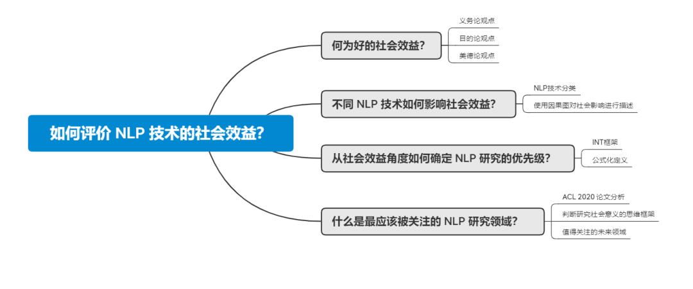
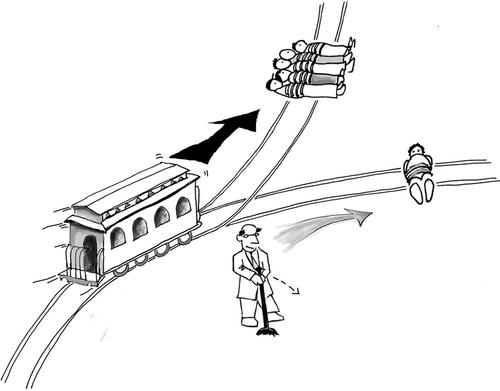
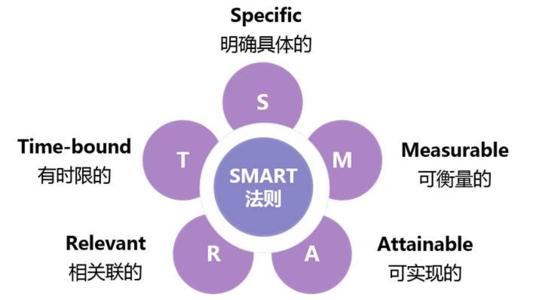
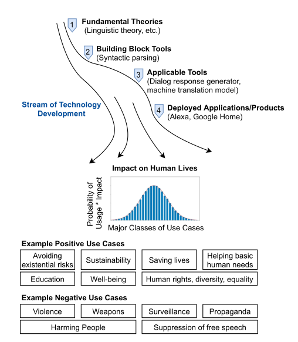
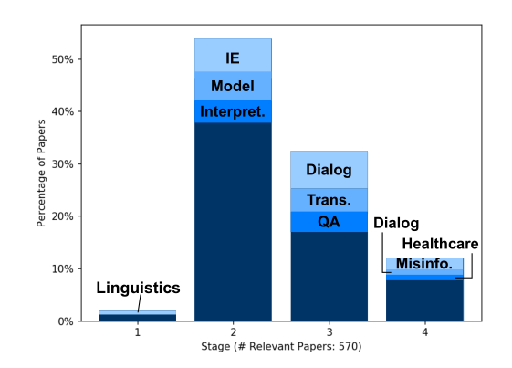
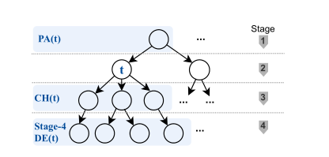
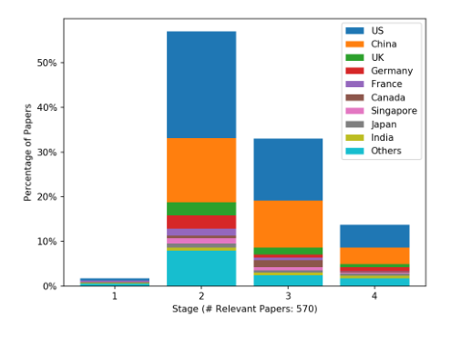
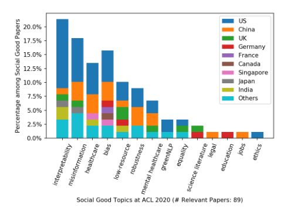
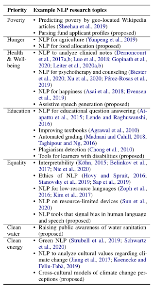

Which NLP Subfield Has the Greatest Social Value?
Imagine a scenario: your boss suddenly comes into a large sum of money and hands you five million yuan to conduct research in natural language processing. Which NLP subfield should you prioritize first?
Machine translation sounds useful. Information extraction is clearly important. Dialogue systems are one of the most visible ways NLP reaches real users. But deciding which NLP tasks are “most important” is an extremely open-ended problem. Commercial value gives us one ranking system; scientific contribution gives us another. If we step back and ask as members of society rather than only as researchers or engineers, evaluating the social benefit of NLP tasks becomes a particularly meaningful question.
A paper accepted to ACL Findings proposes an entire framework for evaluating NLP research from the perspective of social impact. It introduces criteria for assessing the social value of NLP tasks and discusses which topics should receive higher research priority if our goal is to maximize social benefit.

Paper:
How Good Is NLP? A Sober Look at NLP Tasks through the Lens of
Social Impact
Link:
https://arxiv.org/pdf/2106.02359.pdf
What Makes an NLP Technology “Good”?
NLP has undeniably entered almost every part of our lives. We all recognize familiar NLP applications: a joke someone makes about Siri, a paragraph pasted into Google Translate, a chatbot that answers questions, and so on. Once NLP is no longer a concept shared only by a small group of specialists and becomes part of daily life, its social consequences naturally move to center stage.
Nobody wants a bedside conversational assistant to produce dangerous advice such as telling someone to stab their heart. Nor do people want an apparently neutral language system to reproduce racist or sexist content.
Research in AI ethics therefore examines issues such as algorithmic discrimination, fairness, transparency, and justice. These discussions are hardly new; in one form or another, ethical questions have accompanied AI since the field began. At its core, ethics attempts to establish principles for moral judgment: to clarify the boundaries of acceptable action, to search for common ground across cultures and regions, and to define what counts as good and bad in particular situations.
AI ethics therefore asks a fundamental question: What is a good AI system? The paper translates that question into a research-allocation problem:
Given a researcher or research group with a particular set of skills and a set of NLP technologies they could study, which technology is most worth researching if the goal is to produce greater social benefit?
The difficulty can be broken into three questions:
- How should “good social impact” be defined?
- How do different NLP technologies affect social impact?
- How should research priorities be determined?
The paper addresses these questions in stages. First, it draws on classical ethical theories to provide a qualitative way to assess beneficial social impact. Next, it classifies NLP technologies using a causal structural model and uses the resulting hierarchy to discuss how different types of NLP technology affect society. It then borrows a framework from the field of Global Priorities research to propose useful indicators for deciding research priority. Finally, by analyzing 570 papers from ACL 2020, the authors propose a way to think about research significance through the lens of social benefit and identify NLP topics that may deserve greater priority.
What Counts as Good Social Impact?
Every March, the United Nations Sustainable Development Solutions Network publishes the World Happiness Report, using measures such as economic conditions, life expectancy, generosity, social support, freedom, and perceptions of corruption to compare well-being across countries.
But can economic conditions, life expectancy, and similar indicators really define happiness? There will always be disagreement.
The same problem appears when we try to define positive social impact. If we say that reducing energy consumption is socially beneficial, someone living through a −20°C winter may reasonably complain that conserving fuel leaves them without enough heat.
Philosophically, different assumptions can help us navigate these conflicts. One simple approach is intuition: eliminating poverty intuitively appears socially beneficial. But intuition alone is not rigorous enough to support a general evaluation framework. The paper therefore draws on three major ethical traditions: deontology, consequentialism, and virtue ethics.

To understand their differences, consider the familiar trolley problem.
A deontologist emphasizes the authority of moral rules. Actions must be justified by principles. In the trolley problem, pulling the lever directly contributes to one person’s death, and “do not intentionally harm an innocent person” may be treated as an inviolable rule. A strict deontologist might therefore refuse to pull the lever.
A consequentialist, often associated with utilitarianism, instead argues that we should choose the action that produces the greatest overall good. A consequentialist would therefore tend to pull the lever and save more people, even if doing so invites criticism from a deontological perspective.
Finally, virtue ethics focuses less on rules or aggregate outcomes and more on the character of a good person. It asks what a morally admirable person would do, abstracting virtues from exemplary individuals and using those virtues to guide behavior. A virtue ethicist may ultimately make the same choice as a deontologist in the trolley problem, but for different reasons.
These three theories give us three different lenses for evaluating social benefit. We cannot definitively prove which theory is “correct.” This places us in a state of what philosophers call moral uncertainty. Scholars such as William MacAskill argue that even under moral uncertainty, we can still make limited comparisons—for example, favoring actions endorsed by all major ethical frameworks and rejecting actions condemned by all of them.
This gives us a practical evaluation tool. Rather than producing a precise numerical ranking of social impact, it offers a set of perspectives from which to examine the consequences of an NLP technology, somewhat like a radar chart or a SMART analysis. If an NLP application in healthcare is considered morally desirable under all three theories because it helps treat illness and save lives, we have strong reason to regard it as socially beneficial. Where the theories conflict, we should make the tradeoff explicit.

Using this approach together with expert opinions from ethicists, the authors identify several NLP research areas with clear potential for positive social impact, including fraud and misinformation detection, interpretability, low-resource learning, and robustness.
How Do Different NLP Technologies Affect Society?
Different NLP tasks clearly influence society in very different ways. We can reasonably say that an Alexa-like assistant that produces racist language can have a negative social impact, but it is much harder to say whether a speech-recognition component or a particular pretrained representation inside that assistant is socially “good” or “bad.”
To make this distinction clearer, the paper divides NLP technologies into four stages connected by a causal structure.

Stage 1: Fundamental theory. These are theories that shape the foundations of the field. In NLP, linguistic theory remains a major example, despite the famous joke, “Every time I fire a linguist, the performance of the speech recognizer goes up.”
Stage 2: Modular tools. These are components used inside downstream systems, such as tokenization, sequence labeling, and information extraction.
Stage 3: Application research. These are research areas that resemble prototypes of end-user applications, including machine translation, question answering, and dialogue systems.
Stage 4: Commercial products. These are mature systems that can be deployed directly, such as Google Translate or consumer smart speakers.
The authors classify ACL 2020 papers using these four stages and count the most popular topics in each. By paper volume, the ordering is roughly Stage 2 > Stage 3 > Stage 4 > Stage 1, which provides a snapshot of where NLP research effort was concentrated.

This classification gives NLP technology a hierarchy. Based on causal relationships between layers, the four stages can be represented as a tree.

The authors argue that there is a causal dependency among NLP technologies: technologies lower in the tree become possible only after the technologies above them have been developed. Google Translate depends on mature machine-translation methods; machine translation in turn depends on more basic techniques such as representations and other linguistic tools.
If we can estimate the social impact of Stage-4 products, we can propagate those effects backward through the causal graph to estimate the indirect social impact of upstream technologies. The paper models the total social impact of a technology by considering the different dimensions in which it affects society—privacy, free time, education, and so on—together with the scale of deployment and the direction and magnitude of the effect.
For more fundamental technologies, the paper treats their social impact as the aggregated impact of their downstream descendants, weighted by factors such as the probability that a child technology is successfully developed and the contribution of the upstream technology to that descendant.
This framework leads to two useful observations:
- Because their effects accumulate across many descendants, Stage-1 and Stage-2 technologies tend to have increasingly positive total impact as they enable more socially beneficial downstream technologies.
- The greatest uncertainty about whether an impact is good or bad is concentrated at Stage 4, which means developers of deployed products should pay the closest attention to social consequences.
How Should Research Priorities Be Determined?
We now have a framework for thinking about the social effects of different NLP technologies. The next question is choice: among the enormous variety of NLP technologies and theories, how should we decide what deserves research priority?
This brings us back to the imaginary five million yuan from the beginning. How should that money be spent meaningfully? This is closely related to the field of Global Priorities research. Roughly hundreds of billions of dollars are spent worldwide every year on public welfare, yet charities and foundations must still decide: among hunger, poverty, violence, discrimination, disease, and countless other problems, what should be addressed first?
Researchers in global priorities often use a framework known as INT: Important, Neglected, Tractable. For a set of candidate problems, we ask:
- Is the problem important?
- Has the problem already received substantial attention?
- Is the problem realistically tractable?
A problem deserves higher priority when it is more important, more solvable, and more neglected. The paper adapts this framework, using mathematical and economic language, to evaluate NLP research priorities.
First is importance. The authors consider the expected social impact of a technology, combining its potential impact with the probability that the researcher can successfully advance it. Success probability matters because a technology may promise enormous social benefits in theory but have little practical value if it is extremely unlikely to succeed.
Second are neglectedness and tractability. The authors borrow the economic idea of marginal benefit. The question is: how much additional social value can a researcher create by investing one more unit of effort in this technology?
If a research area is already saturated, blindly adding more researchers, time, and resources may produce little marginal gain. Conversely, if a highly important field has long been neglected, a small amount of additional research may create unusually large benefits. This partly explains why researchers are often attracted to opening entirely new research directions.
Finally, the authors introduce opportunity cost to describe the cost of choosing one technology over another. If I devote my time to “green NLP,” I am simultaneously giving up the opportunity to work on dialogue systems, machine translation, or another field.
The point is that doing something “good” is not necessarily enough; we should sometimes ask whether we could do something even better, because a merely good choice can carry a very high opportunity cost.
Which Areas Deserve More Attention?
The paper uses ACL 2020 as its main empirical case. The authors first classify the conference papers according to the four-stage framework and then compare countries.

The United States and China are clearly the top two countries by publication count. China records essentially no Stage-1 papers in this classification. Because Stage 1 is heavily focused on fundamental linguistic theory, one possible explanation is that Chinese work on language theory is simply less likely to be published in English at ACL.
After classification, the authors manually annotate the 570 ACL 2020 papers using the social-impact framework. They identify 89 papers as having particularly positive social value and group them into areas such as bias reduction, education, equality, fraud and misinformation prevention, environmental sustainability, healthcare, interpretability, legal applications, low-resource learning, mental health, and robustness.

Most of these papers focus on interpretability, misinformation reduction, and healthcare. Researchers in the United States publish substantial work on interpretability, while Chinese researchers appear less represented in that category. U.S. researchers devote less attention to education and legal applications, while Indian researchers devote relatively little attention to misinformation reduction.
Judging from ACL 2020, NLP research does not appear to have delivered a particularly satisfying answer to the enormous challenge of improving social welfare. Education, for example, is a major UN Sustainable Development Goal, yet NLP research at the conference touched it relatively rarely.
One reason may be that NLP researchers are not usually funded by organizations whose primary mission is public welfare. More fundamentally, the typical career path in NLP rarely includes a stage where someone hands us five million yuan and forces us to carefully compare what should be studied first and what should be studied later—much less a formal framework for comparing the social impact and priority of different research areas.
What should we do instead? The authors suggest asking five questions before beginning a research project:
- Who will benefit from this technology?
- Which disadvantaged or vulnerable groups could it help?
- Could it contribute to one or more UN Sustainable Development Goals?
- Could it improve people’s quality of life?
- What problems might it create?
Consider machine translation. It benefits speakers of other languages (Q1) and can help reduce the gap between second-language users and native speakers (Q2). It directly improves the sharing of information and knowledge, supporting areas such as quality education, decent work, and global partnerships (Q3). It can improve people’s social participation and quality of life (Q4). At the same time, it might widen gaps between people who can afford advanced smart devices and those who cannot (Q5). Overall, the balance can still be strongly socially beneficial.
Based on this self-check framework, the authors identify NLP research themes with promising social value and propose directions for each. Examples include using NLP to support education for students with disabilities, generating assistive speech for people with communication impairments, and conducting cross-cultural research on climate-change understanding.

Conclusion
This paper is a useful early attempt to qualitatively analyze the social value of NLP technologies. As the authors emphasize, their goal is not to produce a final, definitive answer to the social impact of NLP. Rather, at a moment when NLP is moving from research laboratories into everyday life, they are trying to take a small step toward a more complete understanding of its social meaning.
As NLP research and industrial applications mature, we need a clear and high-level understanding of what these technologies mean for society. Research should not be driven only by which topic is easiest to publish or which technique is easiest to implement. We should also recognize, at the level of motivation, what genuine “research significance” means. Just as moving from school to industry often teaches us to understand the commercial meaning of a technology, research itself should involve learning to understand the technology’s current and potential social meaning.
Computer science is an archetypal applied discipline. In stereotype, programmers and computer scientists are rarely associated with grand ideals about building a better society; the field is often reduced to learning skills that “make money.” Law students can imagine pursuing justice because law is supposed to serve society. Medical students can appeal to the ideal of healing and saving lives.
Thinking seriously about the social benefits of NLP can add a little transcendent meaning and motivation to ordinary code. It gives us a way to bring an “I have a dream” kind of idealism into both the mundane and the brilliant parts of working in this field.